Herramientas y Tecnologias - Desarrollo Web
Frameworks
-
Vue.js

Framework de JavaScript, código abierto, sirve para hacer interfaces de usuario y de aplicaciones web.
-
Angular 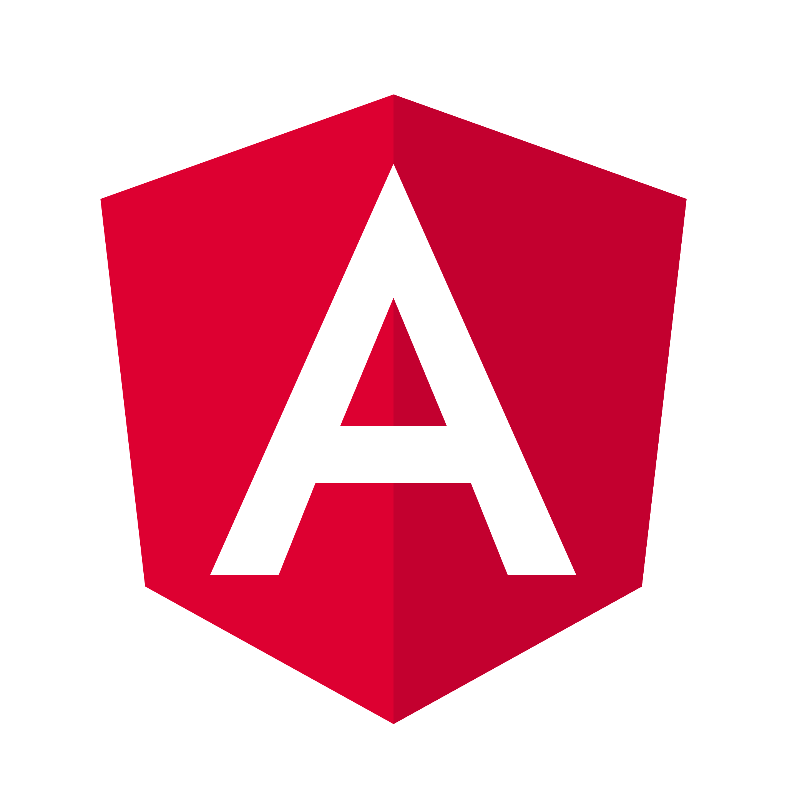
Framework de JavaScript, tambien de código abierto, que se utiliza para la creacion y mantenimiento de aplicaciones web.
Librerias
-
Conjunto de herramientas, código abierto, para diseño de sitios y aplicaciones web.
-
React

De Javascript, código abierto, diseñada para que en la creacion de interfaces de usuario sea mas facil el desarrollo de aplicaciones web.
-
De JavaScript, multiplataforma, simplifica la interacción con los documentos HTML, manipulación del DOM como: manejar eventos. Agrega la técnica AJAX para páginas web.
-
JSP Vue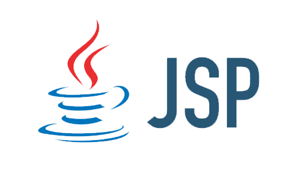
Esta orientada a ayudar a desarrollar páginas dinámicas.
Se puede crear aplicaciones web ejecutables en múltiples plataformas. JSP contiene HTML/XML mezclado para la programacion de scripts.
Compilador
-
Babel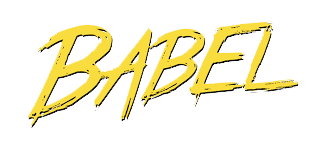
Herramienta que permite transformar código JS avanzado a un código de Javascript manipulable por cualquier navegador.
Framework Web
Diseño
-
Lenguaje de diseño gráfico que da estilo a los diferentes elementos del HTML con el que va relacionado.
Programación
-
Javascript 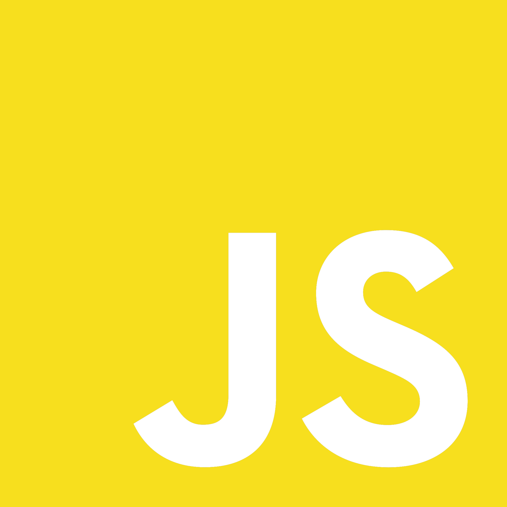
Lenguaje interpretado y orientado a objetos, muy dinámico.
-
Typescript 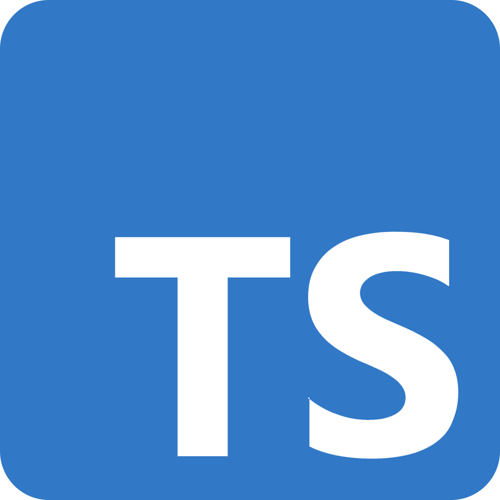
Libre y de código abierto, pertenece a Microsoft. En esencia es JavaScript
-
PHP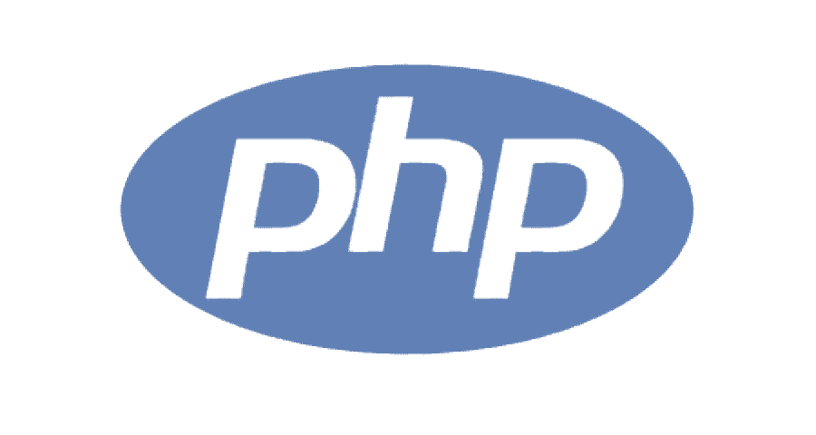
Lenguaje de programación estructurado y de entorno servidor, muy generalizado.
-
Python

Lenguaje interpretado se distingue por la legibilidad de su código. Es un lenguaje de programación multiparadigma.
Modulos de codigo
-
Polifyll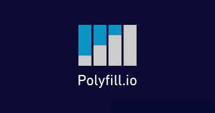
Es un fragmento de código que se utiliza para proporcionar una funcionalidad moderna en navegadores antiguos que no lo admiten de forma nativa.
-
Clase de Java usada para aumentar la capacidad de aplicaciones basadas en el modelo cliente - servidor, que utilizan HTTP.
Herramientas Open Source
-
Webpack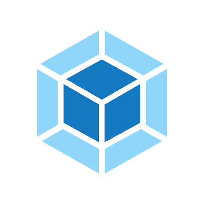
Paquete de módulos de JavaScript, código abierto. Puede transformar activos de front-end como HTML, CSS e imágenes.
Generador de Páginas Web estáticas
-
Gatsby 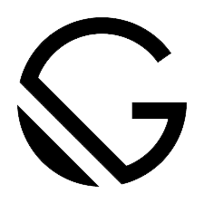
Es un generador de sitios estáticos. Basado en React, se basa en tecnologías web estándares
-
Generador de sitios web HTML y CSS estáticos, escrito en Go. Facil de usar e implementar
-
Jekyll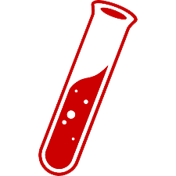
Generador de sitios web estáticos con capacidades de blog.
-
Pelican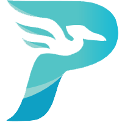
Generador de sitios estáticos, escrito en Python. Acepta el formato Markdown. Fácil de utilizar con sistemas de control de versiones.
-
Vuespress

Generador de sitios estáticos pensado para escribir la documentación de los propios proyectos de Vue.
Metodos/tecnicas
-
Scraping
Técnica utilizada en programas de software para extraer información de sitios web.
Simulan la navegación humana utilizando el protocolo HTTP.